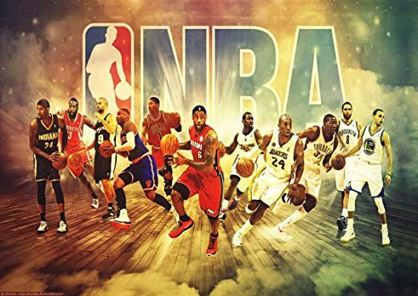

Basquete
.jpg)
Fatos sobre o Basquete sua historia
:O basquete, também conhecido como basquetebol, foi inventado por James Naismith em 1891 em Springfield, Massachusetts, EUA. Inicialmente, o objetivo era criar um esporte indoor para o inverno, que fosse menos agressivo e mais seguro do que outros esportes da época. O jogo começou com uma bola de futebol e cestos de pêssego, que evoluíram para os aros de metal com redes' que conhecemos hojeO basquetebol, popularmente conhecido como basquete, possui diversas curiosidades, como a sua origem no Canadá, a criação das regras por James Naismith e a presença de cestas de pêssegos nos primeiros jogos. O jogo também é marcado por recordes impressionantes, como o de mais pontos em um jogo (100 pontos por Wilt Chamberlain) e o de maior público em um jogo (108 mil pessoas no NBA All-Star Game). Além disso, a história do basquete olímpico é repleta de polêmicas, como a final de 1972 entre EUA e União Soviética, onde a seleção americana se recusou a receber a medalha de prata. . 
egras e Fundamentos: O jogo é disputado por duas equipas de cinco jogadores, com a duração de quatro períodos de 10 minutos. Os jogadores podem bater a bola contra o chão (drible), passar para outros jogadores e arremessar para o cesto, marcando pontos. Jogadores e Posições: No basquete, cada jogador tem um papel específico, como pivô, ala e armador. Os jogadores são classificados por suas habilidades e função no campo.
Os melhores jogadores de basquete da história, como Michael Jordan, LeBron James e Kareem Abdul-Jabbar, são reconhecidos por suas habilidades e conquistas. A seleção brasileira de basquete masculina conta com jogadores como João Marcelo "Mãozinha" e Guilherme Santos.